本站的使用聲明、操作教學，以及感謝一路支持的圖片贊助商。
本站是一個 prompt（提示詞）整理與分享的資料庫。
將各處的提示詞集中收錄、分類編碼，並附上視覺參考，方便查找與運用。
提示詞屬於通用的文字敘述，本站僅作整理與編排，內容供學習與創作參考。
實際生成結果，請依各生圖平台的規範使用。
提示詞的命名多為方便辨識而取，未必精確；
尚未附上圖片的項目，其名稱與 prompt 的對應仍在整理中，
可能不完全一致，還請見諒。
製作人 潛水魚 @sinking_fish
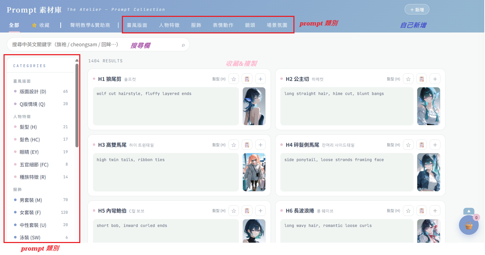
教學截圖不用，用這幾個功能就能局部微調：
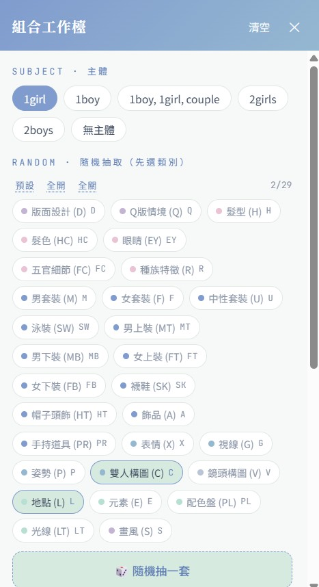
工作檯截圖 ①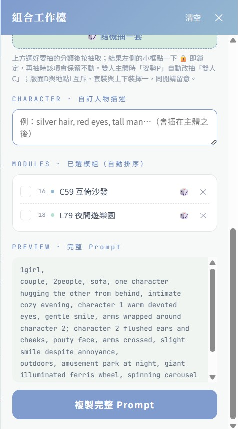
工作檯截圖 ②小提醒：
別把牠的回覆太當真——這位魚魚客服藏了不少彩蛋，
多跟牠聊幾句、東問西問，往往會有意想不到的驚喜等著你發掘。
感謝以下圖片贊助商，提供對應的圖片，並協助 debug prompt 的內容。
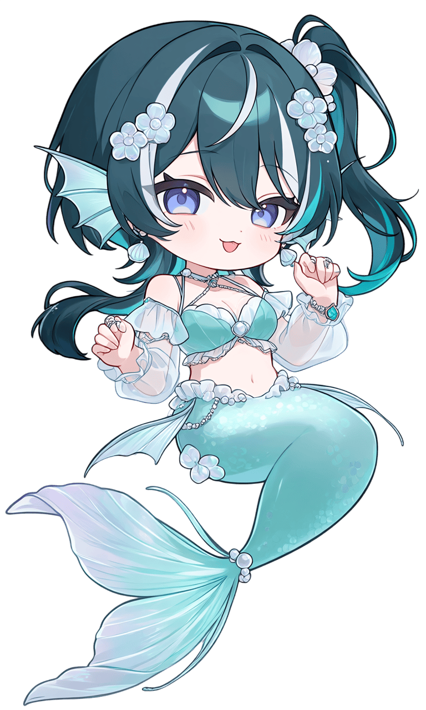
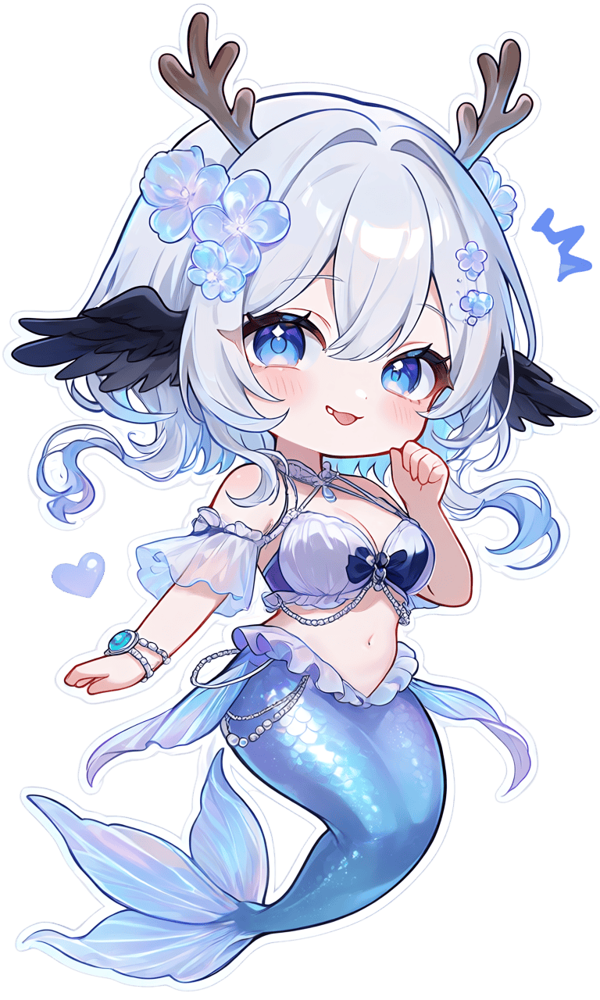
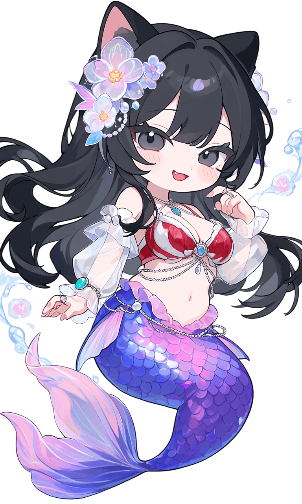
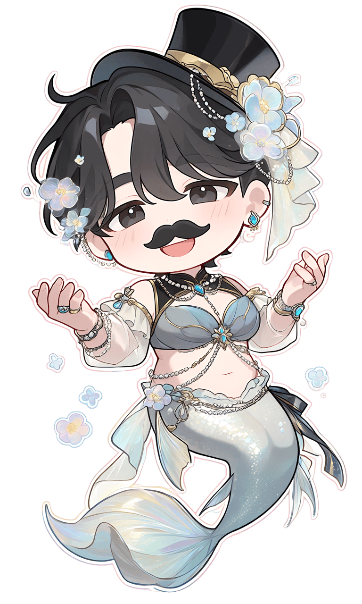
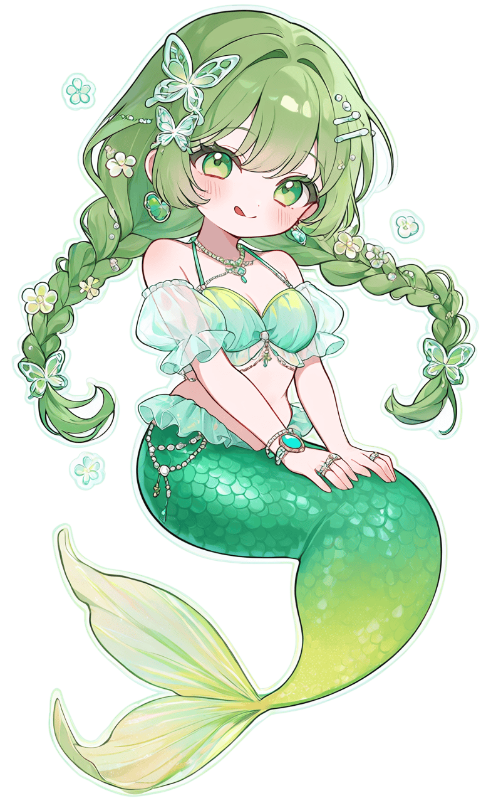
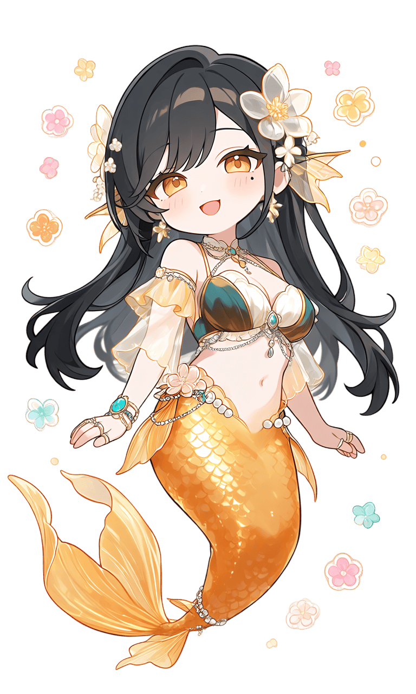
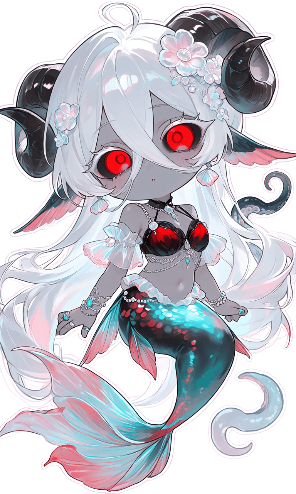
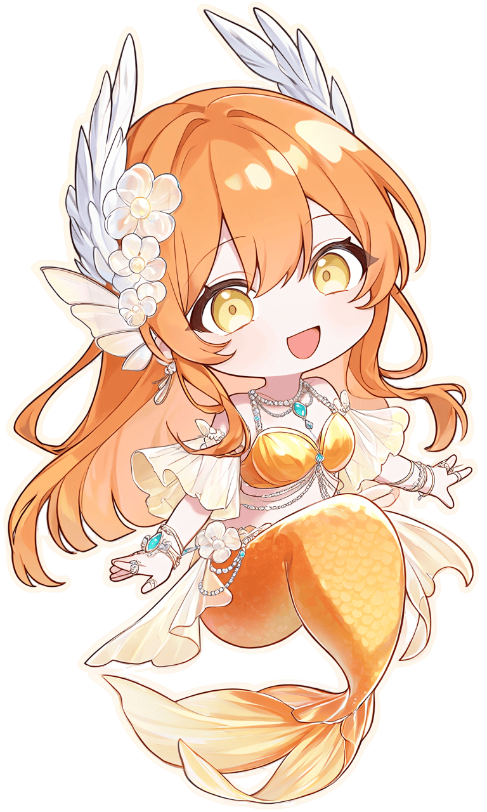
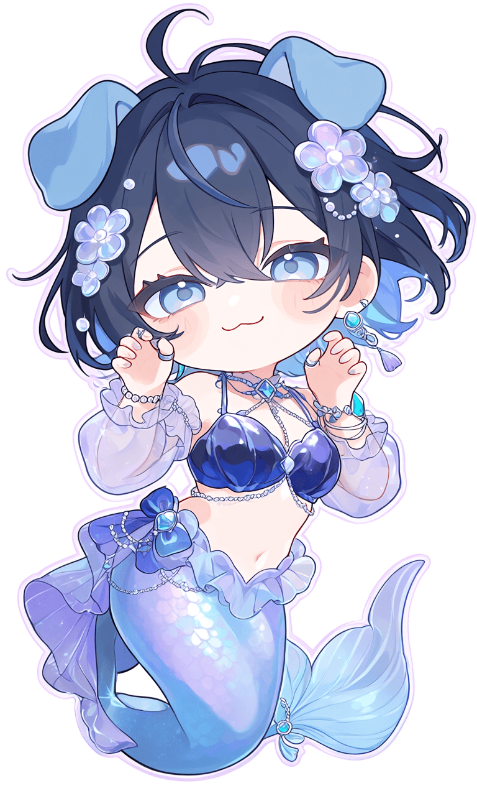
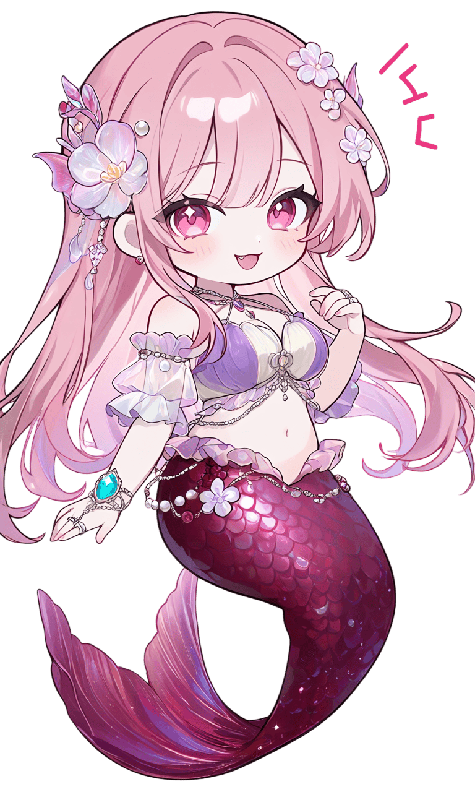
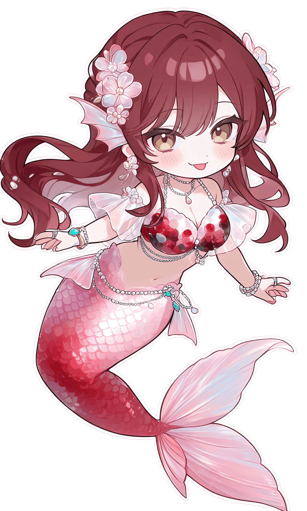